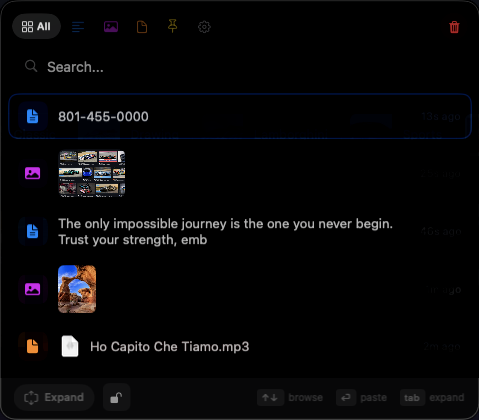

Klipt is a tray that sits on your Mac. Drop in files, screenshots, audio, images and text — then pull them back out wherever you need them.
Download for Mac
Copying one thing at a time means losing the last thing you copied. Klipt just keeps them.
Copy it, or drag it straight onto the tray. Screenshots land there on their own. Files, audio, images, links, text — anything.
Everything waits together, whatever the type. Drop a batch of files and they stay grouped.
Press ⌘⌥V in any app and paste, or drag it back out into a folder, an email, a chat.
Every screenshot you take drops straight into the tray instead of piling up on your Desktop. It is still there an hour later when you actually need it, and it clears itself out when you don't.